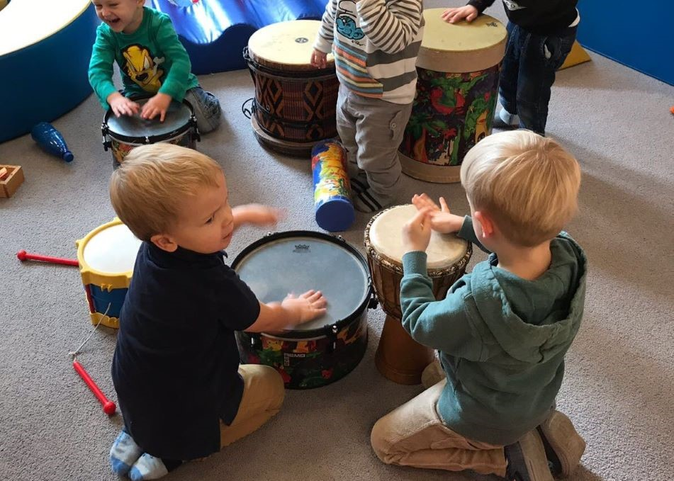

Cursos

Violoncelo
O violoncelo, também conhecido como cello, é o segundo maior instrumento musical da família dos instrumentos de corda. A imponência do violoncelo, sem dúvidas, impressiona. A sua beleza do instrumento junto com o impacto que o som produzido gera tornaram o “cello” um dos mais atrativos dentro da família das cordas. O curso de violoncelo da Escola Centro Suzuki de Presidente Prudente é ideal para alunos que desejam aprender a tocar esse instrumento clássico de cordas. Com uma abordagem pedagógica baseada no método Suzuki, os alunos aprendem desde as noções básicas até técnicas avançadas de dedilhado, leitura de partituras e execução de peças musicais.
"Onde o amor é profundo, muito pode ser realizado."
Shinichi Suzuki
Violino
O violino é o instrumento de cordas friccionadas mais agudo da categoria, quando comparado aos seus familiares. É um dos instrumentos mais conhecido e famosos, mas também um dos mais difíceis de ser aprendido. A Escola Centro Suzuki de Presidente Prudente oferece um curso completo de violino para alunos de todas as idades e níveis de habilidade. O curso é projetado para ajudar os alunos a desenvolverem habilidades musicais fundamentais, incluindo leitura de partitura, técnica de arco e dedilhado, entonação e expressão musical.
"Toda criança é capaz"
Shinichi Suzuki

Musicalização Infantil
O curso de musicalização infantil é voltado para crianças com idade pré-escolar que desejam se familiarizar com a música desde cedo. Nesse curso, as crianças aprendem a tocar instrumentos musicais, bem como a cantar e dançar, desenvolvendo habilidades musicais importantes, como o ritmo e a coordenação.
"Uma quantidade ilimitada de habilidade pode desenvolver quando pai e filho estão se divertindo juntos."
Shinichi Suzuki